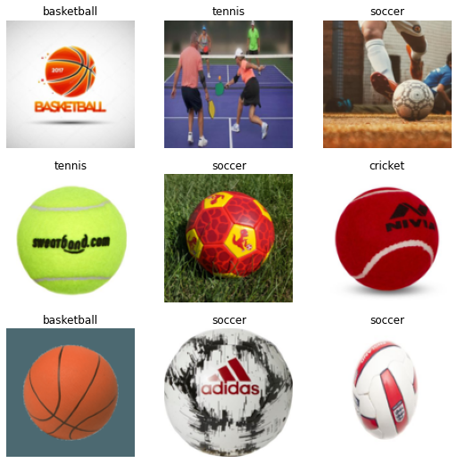
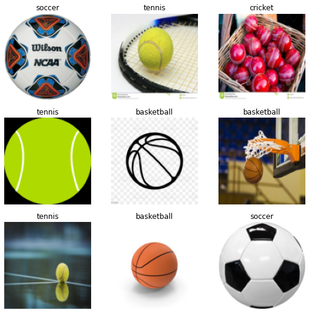
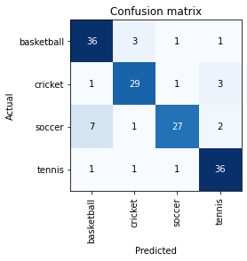

!aws --versionaws-cli/1.22.68 Python/3.8.10 Linux/4.14.287-215.504.amzn2.x86_64 botocore/1.24.13
In this notebook, we will build an image classifier to categorize images for different types of balls, including cricket, tennis, basketball, and soccer. Data is collected from the DuckDuckGo search engine. Unlike a getting started tutorial, we will take an alternate approach. Our focus is NOT to quickly train a model/prototype with fastai library. It may take only 5 lines of code to prepare an image classifier using this library. Instead, let’s aim to understand each line and function involved in the process. We have a lot to uncover, so let’s get started.
This notebook is prepared using Amazon SageMaker studio’s Python 3 (PyTorch 1.10 Python 3.8 GPU Optimized) kernel running on the ml.t3.medium instance. I have also tried other images, including Data Science and Data Science 2.0, but fastai does not work smoothly with them. ml.t3.medium does not have any GPU attached to it but somehow Python 3 (PyTorch 1.10 Python 3.8 CPU Optimized) kernel was giving slow performance compare to GPU optimized.
You may run this notebook on any other system without any issue.
!aws --versionaws-cli/1.22.68 Python/3.8.10 Linux/4.14.287-215.504.amzn2.x86_64 botocore/1.24.13!python3 --versionPython 3.8.10Intall fastai library. I have used IPython magic cell %%capture to capture and discard output of this cell. You may read more about this magic command from Capturing Output With %%capture
%%capture
!pip install -U fastaiNext, I will install the library “duckduckgo_search” that can be used to “Search for words, documents, images, news, maps and text translation using the DuckDuckGo.com search engine.”
%%capture
!pip install -Uqq duckduckgo_searchChecking the version of the installed fastai library.
import fastai
fastai.__version__'2.7.9'We will download training data images from DuckDuckGo search engine. The following function uses the search engine to “query” for an image and returns searched image URLs.
##
# Step: Define a function to search images and return URLs
# Use 'duckduckgo' search engine to find image URLs
from duckduckgo_search import ddg_images
from fastcore.all import *
def search_images(term, max_images=200):
print(f"Searching for '{term}'")
return L(ddg_images(term, max_results=max_images)).itemgot('image')Now let’s define the search strings to download images for tennis, cricket, soccer, and basketball balls.
##
# Step: Define the search strings to find images on the Internet
searches = {
"tennis": "tennis ball photo",
"cricket": "cricket hard ball photo",
"soccer": "soccer ball photo",
"basketball": "basketball ball photos",
}
searches{'tennis': 'tennis ball photo',
'cricket': 'cricket hard ball photo',
'soccer': 'soccer ball photo',
'basketball': 'basketball ball photos'}Search and get the URL for a tennis ball image.
##
# Step: Search an image URL for tennis balls
urls = search_images(searches['tennis'], max_images=1)
urls[0]Searching for 'tennis ball photo''https://www.thoughtco.com/thmb/rC73Tl0nBlYStXTVXrCRAnhPaq8=/3888x2592/filters:fill(auto,1)/tennis-ball-on-tennis-court-125847528-58db9de83df78c5162dba2ee.jpg'Define a local path to store all the downloaded images.
##
# Step: Define a local path that will be root directory for this project
# All the artifacts related to this post will be stored under this folder
local_path = "./datasets/2022-08-10-sagemaker-fastai-classifier"Download a sample image and view it.
##
# Step: Download an image using its URL, and show it as a thumbnail
from fastai.vision.all import *
from fastdownload import download_url
dest = f'{local_path}/sample/tennis_ball.jpg'
download_url(urls[0], dest, show_progress=True)
im = Image.open(dest)
im.to_thumb(256,256)/opt/conda/lib/python3.8/site-packages/torchvision/io/image.py:11: UserWarning: Failed to load image Python extension:
warn(f"Failed to load image Python extension: {e}")We have now downloaded a sample image from the Internet using the DuckDuckGo search engine and shown it as a thumbnail. For this, we have also used a few functions. So let’s deconstruct them to understand them better.
The first function we have used is download_url. Let’s check its documentation.
#collapse_output
??download_urlSignature: download_url(url, dest=None, timeout=None, show_progress=True) Source: def download_url(url, dest=None, timeout=None, show_progress=True): "Download `url` to `dest` and show progress" pbar = progress_bar([]) def progress(count=1, bsize=1, tsize=None): pbar.total = tsize pbar.update(count*bsize) return urlsave(url, dest, reporthook=progress if show_progress else None, timeout=timeout) File: /opt/conda/lib/python3.8/site-packages/fastdownload/core.py Type: function
This tells us that download_url function is from fastdownload library. This library is also published by the fastai team. Its purpose is “Easily download, verify, and extract archives”. You may read more about this library from its documentation site fastdownload.fast.ai
The next function we have used is Image.open. Let’s check its documentation too.
#collapse_output
?Image.openSignature: Image.open(fp, mode='r', formats=None) Docstring: Opens and identifies the given image file. This is a lazy operation; this function identifies the file, but the file remains open and the actual image data is not read from the file until you try to process the data (or call the :py:meth:`~PIL.Image.Image.load` method). See :py:func:`~PIL.Image.new`. See :ref:`file-handling`. :param fp: A filename (string), pathlib.Path object or a file object. The file object must implement ``file.read``, ``file.seek``, and ``file.tell`` methods, and be opened in binary mode. :param mode: The mode. If given, this argument must be "r". :param formats: A list or tuple of formats to attempt to load the file in. This can be used to restrict the set of formats checked. Pass ``None`` to try all supported formats. You can print the set of available formats by running ``python3 -m PIL`` or using the :py:func:`PIL.features.pilinfo` function. :returns: An :py:class:`~PIL.Image.Image` object. :exception FileNotFoundError: If the file cannot be found. :exception PIL.UnidentifiedImageError: If the image cannot be opened and identified. :exception ValueError: If the ``mode`` is not "r", or if a ``StringIO`` instance is used for ``fp``. :exception TypeError: If ``formats`` is not ``None``, a list or a tuple. File: /opt/conda/lib/python3.8/site-packages/PIL/Image.py Type: function
It tells us that this function is from Python Pillow library and is used to open and read an image file. Refer to this library documentation for more information python-pillow.org
The next function that we used is Image.to_thumb. Let’s check its documentation.
#collapse_output
??Image.Image.to_thumbSignature: Image.Image.to_thumb(self: 'Image.Image', h, w=None) Source: @patch def to_thumb(self:Image.Image, h, w=None): "Same as `thumbnail`, but uses a copy" if w is None: w=h im = self.copy() im.thumbnail((w,h)) return im File: /opt/conda/lib/python3.8/site-packages/fastai/vision/core.py Type: function
So this function is actually from the fastai library, and its docstring tells us that it is the same as the Pillow library thumbnail function but uses a copy of the image.
Let’s check Pillow thumbnail function documentation as well.
#collapse_output
?Image.Image.thumbnailSignature: Image.Image.thumbnail(self, size, resample=3, reducing_gap=2.0) Docstring: Make this image into a thumbnail. This method modifies the image to contain a thumbnail version of itself, no larger than the given size. This method calculates an appropriate thumbnail size to preserve the aspect of the image, calls the :py:meth:`~PIL.Image.Image.draft` method to configure the file reader (where applicable), and finally resizes the image. Note that this function modifies the :py:class:`~PIL.Image.Image` object in place. If you need to use the full resolution image as well, apply this method to a :py:meth:`~PIL.Image.Image.copy` of the original image. :param size: Requested size. :param resample: Optional resampling filter. This can be one of :py:data:`PIL.Image.NEAREST`, :py:data:`PIL.Image.BOX`, :py:data:`PIL.Image.BILINEAR`, :py:data:`PIL.Image.HAMMING`, :py:data:`PIL.Image.BICUBIC` or :py:data:`PIL.Image.LANCZOS`. If omitted, it defaults to :py:data:`PIL.Image.BICUBIC`. (was :py:data:`PIL.Image.NEAREST` prior to version 2.5.0). See: :ref:`concept-filters`. :param reducing_gap: Apply optimization by resizing the image in two steps. First, reducing the image by integer times using :py:meth:`~PIL.Image.Image.reduce` or :py:meth:`~PIL.Image.Image.draft` for JPEG images. Second, resizing using regular resampling. The last step changes size no less than by ``reducing_gap`` times. ``reducing_gap`` may be None (no first step is performed) or should be greater than 1.0. The bigger ``reducing_gap``, the closer the result to the fair resampling. The smaller ``reducing_gap``, the faster resizing. With ``reducing_gap`` greater or equal to 3.0, the result is indistinguishable from fair resampling in most cases. The default value is 2.0 (very close to fair resampling while still being faster in many cases). :returns: None File: /opt/conda/lib/python3.8/site-packages/PIL/Image.py Type: function
Summary of the functions used till now
Functions we have seen till now are summarized in this section.
download_url: Download url to dest and show progress. This function is from module fastdownload\core.py. Fastdownload is a separate library from the fastai team, and its use is to “Easily download, verify, and extract archives”.
Image.open: Opens and identifies the given image file. This is a lazy operation; this function identifies the file, but the file remains open, and the actual image data is not read from the file until you try to process the data. this function is from pil\image.py or Python Pillow Image library. Fastai installs this library for us. Fastai vision module internally loads Pillow for us. It has defined wrapper functions to make it easier to use this library in machine learning work.
Image.open documentation link: PIL.Image.openImage.to_thumb: Same as thumbnail, but uses a copy. This function is from fastai\vision\core.py module. It is a wrapper function around the PIL thumbnail function.
Image.thumbnail: Make this image into a thumbnail. This method modifies the image to contain a thumbnail version of itself, no larger than the given size. This method calculates an appropriate thumbnail size to preserve the image’s aspect, calls the draft() method to configure the file reader (where applicable), and finally resizes the image. Note that this function modifies the Image object in place. If you need to use the full resolution image, apply this method to a copy() of the original image. This function is from pil\image.py
Summary of the steps performed till now
Let’s proceed with our work. First, define a filesystem “images” path where files from the search engine will be downloaded.
##
# Step: Define a folder path where downloaded images will be stored
path = Path(f'{local_path}/images')We have used a Path class so let’s check its documentation.
#collapse_output
?PathInit signature: Path(*args, **kwargs) Docstring: PurePath subclass that can make system calls. Path represents a filesystem path but unlike PurePath, also offers methods to do system calls on path objects. Depending on your system, instantiating a Path will return either a PosixPath or a WindowsPath object. You can also instantiate a PosixPath or WindowsPath directly, but cannot instantiate a WindowsPath on a POSIX system or vice versa. File: /opt/conda/lib/python3.8/pathlib.py Type: type Subclasses: PosixPath, WindowsPath
From the documentation, we find that the Path class is from Python standard library module pathlib. Python’s official documentation page for this module is pathlib.html. We have not loaded this module, so it begs the question, who loaded it for us? When I checked the fastai code repository, I found a file named fastai/imports.py. This file has many imports defined in it, and fastai is loading it for us behind the scenes. This imports.py file is loaded in many core fastai modules (data, vision, tabular, etc.). A typical loading sequence is as follows
from fast.vision.all import * loads fastai.vision.core.py
fastai.vision.core.py loads fastai.torch_basics.py
fastai.torch_basics.py loads fastai.imports.py
fastai.imports.py loads from pathlib import Path
Okay, we have understood how Path library is loaded implicitly for us. So let’s continue with our work and download images using the search strings to the Path folder.
##
# Step: Use each search string to search and download images
for key, value in searches.items():
dest = (path/key)
dest.mkdir(exist_ok=True, parents=True)
download_images(dest, urls=search_images(value))
resize_images(path/key, max_size=400, dest=path/key)/opt/conda/lib/python3.8/site-packages/PIL/Image.py:945: UserWarning: Palette images with Transparency expressed in bytes should be converted to RGBA images
warnings.warn(
/opt/conda/lib/python3.8/site-packages/PIL/Image.py:945: UserWarning: Palette images with Transparency expressed in bytes should be converted to RGBA images
warnings.warn(
/opt/conda/lib/python3.8/site-packages/PIL/Image.py:945: UserWarning: Palette images with Transparency expressed in bytes should be converted to RGBA images
warnings.warn(
/opt/conda/lib/python3.8/site-packages/PIL/Image.py:945: UserWarning: Palette images with Transparency expressed in bytes should be converted to RGBA images
warnings.warn(In the last cell, we have introduced another function resize_images. So let’s check its docs too.
#collapse_output
?resize_imagesSignature: resize_images( path, max_workers=2, max_size=None, recurse=False, dest=Path('.'), n_channels=3, ext=None, img_format=None, resample=2, resume=None, **kwargs, ) Docstring: Resize files on path recursively to dest to max_size File: /opt/conda/lib/python3.8/site-packages/fastai/vision/utils.py Type: function
It tells us that this function is from the fastai vision module. Its purpose is to resize images to a given MAX size and store them in a destination folder. If any image size exceeds the max size, this function will resize it to a given size. Otherwise (smaller than max size), the image is left as it is.
So our images are now downloaded. Let’s check them.
##
# Step: Check the downloaded image files
fns = get_image_files(path)
fns(#757) [Path('datasets/2022-08-10-sagemaker-fastai-classifier/images/tennis/ee4bb413-b78d-4f2a-8e41-3f32bbad79a2.jpeg'),Path('datasets/2022-08-10-sagemaker-fastai-classifier/images/tennis/647709da-50e5-4344-8cd5-9895448d47dc.jpg'),Path('datasets/2022-08-10-sagemaker-fastai-classifier/images/tennis/8a9378aa-6c9d-4456-8a8e-19ddc1a00354.jpeg'),Path('datasets/2022-08-10-sagemaker-fastai-classifier/images/tennis/84fd1455-607d-40c9-9454-8d06c18c8eab.jpg'),Path('datasets/2022-08-10-sagemaker-fastai-classifier/images/tennis/20711509-3b5e-4b06-93e1-2013a1d40279.jpeg'),Path('datasets/2022-08-10-sagemaker-fastai-classifier/images/tennis/ae3b15ca-748b-4fdd-868d-e602bf37c79e.jpg'),Path('datasets/2022-08-10-sagemaker-fastai-classifier/images/tennis/df19cf58-1da4-4dbc-8c9c-0224c6ffa32b.jpg'),Path('datasets/2022-08-10-sagemaker-fastai-classifier/images/tennis/5775d55d-1c61-4477-aab5-0dd0feb9c5ba.jpg'),Path('datasets/2022-08-10-sagemaker-fastai-classifier/images/tennis/31dfd24b-35ca-43fa-8cb9-5227b6ee9dac.jpg'),Path('datasets/2022-08-10-sagemaker-fastai-classifier/images/tennis/bf9ec4b8-f237-4030-b77b-ca02fcbf96c2.jpg')...]Checking the documentation for get_image_files
#collapse_output
??get_image_filesSignature: get_image_files(path, recurse=True, folders=None) Source: def get_image_files(path, recurse=True, folders=None): "Get image files in `path` recursively, only in `folders`, if specified." return get_files(path, extensions=image_extensions, recurse=recurse, folders=folders) File: /opt/conda/lib/python3.8/site-packages/fastai/data/transforms.py Type: function
It tells us that this function is from the fastai data module. It gets image files in the directory recursively. Internally it is calling another function get_files. Let’s check it as well.
#collapse_output
??get_filesSignature: get_files( path, extensions=None, recurse=True, folders=None, followlinks=True, ) Source: def get_files(path, extensions=None, recurse=True, folders=None, followlinks=True): "Get all the files in `path` with optional `extensions`, optionally with `recurse`, only in `folders`, if specified." path = Path(path) folders=L(folders) extensions = setify(extensions) extensions = {e.lower() for e in extensions} if recurse: res = [] for i,(p,d,f) in enumerate(os.walk(path, followlinks=followlinks)): # returns (dirpath, dirnames, filenames) if len(folders) !=0 and i==0: d[:] = [o for o in d if o in folders] else: d[:] = [o for o in d if not o.startswith('.')] if len(folders) !=0 and i==0 and '.' not in folders: continue res += _get_files(p, f, extensions) else: f = [o.name for o in os.scandir(path) if o.is_file()] res = _get_files(path, f, extensions) return L(res) File: /opt/conda/lib/python3.8/site-packages/fastai/data/transforms.py Type: function
This tells us that this function is also from the fastai data module. It reads the files from the folder and returns their paths as “L” class objects. L class is new to us so let’s check what this class is about.
#collapse_output
?LInit signature: L(items=None, *rest, use_list=False, match=None) Docstring: Behaves like a list of `items` but can also index with list of indices or masks File: /opt/conda/lib/python3.8/site-packages/fastcore/foundation.py Type: _L_Meta Subclasses: TfmdLists, MultiCategory, LabeledBBox
It tells us that L class is from a separate library fastcore, also released by the fastai team. The purpose of this library is defined as Python supercharged for the fastai library. An important takeaway from this class documentation is that it extends the Python list functionality and calls it the L class. You may read more on this library from fastcore.fast.ai
##
# Step: Verify the downloaded images
# If any image is corrupt then remove it.
failed = verify_images(fns)
failed.map(Path.unlink)
len(failed)3A new function, verify_images is used in the above cell. First, let’s check its documentation.
#collapse_output
?verify_imagesSignature: verify_images(fns) Docstring: Find images in `fns` that can't be opened File: /opt/conda/lib/python3.8/site-packages/fastai/vision/utils.py Type: function
This tells us that verify_images is from fastai vision module, and it simply returns images (Paths) that cannot be opened. So we removed these corrupt image files to make our data clean.
##
# Step: print count of images downloaded against each search string
for search in searches:
fns = get_image_files(path/search)
print(search, "images count: ", len(fns))tennis images count: 189
cricket images count: 185
soccer images count: 193
basketball images count: 190Summary of the functions used till now
Path: Is from Python standard library pathlib module. fastai loads this module for us
resize_images: Is from fastai library vision module. Its purpose is to resize images to a given MAX size and store them in a destination folder
get_image_files: Is from fastai library data module. It returns a list (L class) of image file paths. Internally it calls get_files function
get_files: This is also from fastai library data module. It returns L class list of file paths
L class object: Is from fastcore library. It extends Python list object features
verify_images: Is from fastai library vision module. It verifies images and returns paths of images that cannot be opened
Summary of the steps performed till now
LWe have our training data (images) downloaded in a folder. So let’s continue with our work and create a DataBlock on them.
##
# Step: Create a data block
balls = DataBlock(
blocks=(ImageBlock, CategoryBlock),
get_items=get_image_files,
splitter=RandomSplitter(valid_pct=0.2, seed=42),
get_y=parent_label,
item_tfms=[Resize(128, method='squish')]
)A “DataBlock” is like a package or a pipeline with instructions that tell the type of data we are dealing with and how we want to process it. It is like a blueprint that defines how we want to process our data. If you are coming from scikit-learn world, you may think of it as a sklearn Pipeline and ColumnTransformer. Let’s check this class documentation for a better understanding.
#collapse_output
?DataBlockInit signature: DataBlock( blocks: 'list' = None, dl_type: 'TfmdDL' = None, getters: 'list' = None, n_inp: 'int' = None, item_tfms: 'list' = None, batch_tfms: 'list' = None, *, get_items=None, splitter=None, get_y=None, get_x=None, ) Docstring: Generic container to quickly build `Datasets` and `DataLoaders`. File: /opt/conda/lib/python3.8/site-packages/fastai/data/block.py Type: type Subclasses:
It tells us that it is from fastai data module. On its usage, it says it is a Generic container to build DataLoaders. Let’s deconstruct the arguments we have passed to this class to understand them.
The first argument that we have passed is the blocks.
blocks=(ImageBlock, CategoryBlock)blocks are themselves predefined domain-specific containers (or pipelines) with default transformations defined for common use cases. For example, CategoryBlock is for “single-label categorical targets”. And the default transformations for this type of data are
Similary, many other built-in blocks are available in the fastai library for various data types and domains. All these blocks are like pipelines with default transformations defined (or simply generic containers with a set of instructions). So, by blocks=(ImageBlock, CategoryBlock), we are defining a blueprint and saying that for X and y of our data, treat them with ImageBlock and CategoryBlock, respectively. Here X is our training data (or images), and y is our labels i.e. tennis ball, cricket ball, etc.
The next argument in DataBlock is get_items
get_items=get_image_filesIt tells the blueprint on how to get the data items. Data items in our case are images, and we are telling it to use “get_image_files” function to get the image paths.
Then we pass the argument “splitter”
splitter=RandomSplitter(valid_pct=0.2, seed=42),Here we are telling the DataBlock how to split the data.
Note that each DataBlock blueprint requires four things: the types of your input/labels (or blocks), and at least two functions: get_items and splitter.
We have passed a class RandomSplitter for a splitting strategy. Let’s check this class doc for more clarity.
#collapse_output
?RandomSplitterSignature: RandomSplitter(valid_pct=0.2, seed=None) Docstring: Create function that splits `items` between train/val with `valid_pct` randomly. File: /opt/conda/lib/python3.8/site-packages/fastai/data/transforms.py Type: function
This class is also from the fastai data module, and it randomly splits the data into two sets: train and validation.
In the DataBlock constructor, we also passed an argument get_y that defined how to get the labels. Note that we have not defined anything for X, so the library will automatically take the data found in get_items as X. for get_y we have passed a class parent_label. Let’s check its documentation to understand what it is for.
get_y=parent_label#collapse_output
?parent_labelSignature: parent_label(o) Docstring: Label `item` with the parent folder name. File: /opt/conda/lib/python3.8/site-packages/fastai/data/transforms.py Type: function
It tells that it is another class from the fastai data module and returns labels derived from the parent folder name. Meaning that all my cricket ball images are placed in a folder name cricket, so this class will automatically label all the images under it as cricket.
The last argument we have passed is item_tfms (item transformations). This argument defines if we want to apply any other transformation besides those described in blocks on each data point. Here we are telling it to use the Resize method on each item (from X). What does this function do? Let’s check the docs.
item_tfms=[Resize(128, method='squish')]#collapse_output
??ResizeInit signature: Resize( self, size: 'int | tuple', method: 'ResizeMethod' = 'crop', pad_mode: 'PadMode' = 'reflection', resamples=(2, 0), **kwargs, ) Docstring: A transform that before_call its state at each `__call__` Source: class Resize(RandTransform): split_idx,mode,mode_mask,order = None,BILINEAR,NEAREST,1 "Resize image to `size` using `method`" def __init__(self, size:int|tuple, # Size to resize to, duplicated if one value is specified method:ResizeMethod=ResizeMethod.Crop, # A `ResizeMethod` pad_mode:PadMode=PadMode.Reflection, # A `PadMode` resamples=(BILINEAR, NEAREST), # Pillow `Image` resamples mode, resamples[1] for mask **kwargs ): size = _process_sz(size) store_attr() super().__init__(**kwargs) self.mode,self.mode_mask = resamples def before_call(self, b, split_idx:int # Index of the train/valid dataset ): if self.method==ResizeMethod.Squish: return self.pcts = (0.5,0.5) if split_idx else (random.random(),random.random()) def encodes(self, x:Image.Image|TensorBBox|TensorPoint): orig_sz = _get_sz(x) if self.method==ResizeMethod.Squish: return x.crop_pad(orig_sz, fastuple(0,0), orig_sz=orig_sz, pad_mode=self.pad_mode, resize_mode=self.mode_mask if isinstance(x,PILMask) else self.mode, resize_to=self.size) w,h = orig_sz op = (operator.lt,operator.gt)[self.method==ResizeMethod.Pad] m = w/self.size[0] if op(w/self.size[0],h/self.size[1]) else h/self.size[1] cp_sz = (int(m*self.size[0]),int(m*self.size[1])) tl = fastuple(int(self.pcts[0]*(w-cp_sz[0])), int(self.pcts[1]*(h-cp_sz[1]))) return x.crop_pad(cp_sz, tl, orig_sz=orig_sz, pad_mode=self.pad_mode, resize_mode=self.mode_mask if isinstance(x,PILMask) else self.mode, resize_to=self.size) File: /opt/conda/lib/python3.8/site-packages/fastai/vision/augment.py Type: _TfmMeta Subclasses:
It tells us that this class is from the fastai vision module, but the docstring is not very helpful. Overall the impression is that this function internally uses the Pillow library and helps resize images. It utilizes multiple techniques to make all images of the same size like padding, cropping, reflection, squish, etc. Here we want all the pictures of the exact same size. Previously we have seen a similar function while downloading images (resize_images), which applied to the images max size.
In the last section, we created a blueprint that defines the type of data we are dealing with and some transformations for it. We call it DataBlock. But a DataBlock is just a set of instructions as it does not point to any data. When we group a DataBlock with the actual data, we get a Dataset. But in machine learning workloads, we commonly deal with batches of data from the same dataset. For this, we have an iterator class over “Dataset” that creates batches from the given dataset for us. We call it DataLoaders. Both these concepts come from Pytorch on which fastai has its roots. So let’s first learn about these new concepts directly from Pytorch documentation.
Code for processing data samples can get messy and hard to maintain; we ideally want our dataset code to be decoupled from our model training code for better readability and modularity. PyTorch provides two data primitives:
torch.utils.data.DataLoaderandtorch.utils.data.Datasetthat allow you to use pre-loaded datasets as well as your own data. Dataset stores the samples and their corresponding labels, and DataLoader wraps an iterable around the Dataset to enable easy access to the samples.
Read more about it from Pytorch documentation data_tutorial.html
What fastai provides is that it builds on these Pytorch constructs and extends their functionality. You can say that while working with Pytorch fastai team found many repeated steps for everyday tasks in their machine learning work. So they created higher-level functions in fastai that do many of these repeated and common tasks for us (though internally, it is still using Pytorch). This way, we developers can achieve more with fewer lines of code in fastai. So using fastai, we don’t need to create a Dataset and then a Dataloader. Instead, we can get a Dataloader by pointing our DataBlock to data and asking it to return a DataLoader. In the next cell, we are doing that.
##
# Step: Create a DataLoader
dls = balls.dataloaders(path)To complete the picture, let’s also check the documentation of Datasets from the fastai library.
#collapse-output
?DatasetsInit signature: Datasets( items: 'list' = None, tfms: 'list | Pipeline' = None, tls: 'TfmdLists' = None, n_inp: 'int' = None, dl_type=None, *, use_list: 'bool' = None, do_setup: 'bool' = True, split_idx: 'int' = None, train_setup: 'bool' = True, splits: 'list' = None, types=None, verbose: 'bool' = False, ) Docstring: A dataset that creates a tuple from each `tfms` File: /opt/conda/lib/python3.8/site-packages/fastai/data/core.py Type: type Subclasses:
It tells us that it is defined in fastai data module.
Let’s do the same for DataLoaders and check its documentation.
#collapse-output
?DataLoadersInit signature: DataLoaders(*loaders, path: 'str | Path' = '.', device=None) Docstring: Basic wrapper around several `DataLoader`s. File: /opt/conda/lib/python3.8/site-packages/fastai/data/core.py Type: type Subclasses: ImageDataLoaders, SegmentationDataLoaders
It tells us that DataLoaders class is also defined in fastai library data module.
Important notes from DataLoaders documentation:
DataLoaders.train: Training DataLoaderDataLoaders.valid: Validation DataLoaderDataLoaders.train_ds: Training DatasetDataLoaders.valid_ds: Validation DatasetWe can also check the data loader object’s data type to confirm its class name and origin.
##
# dataloader object type
type(dls)fastai.data.core.DataLoaders##
# check types for dataloaders.train and dataloaders.valid
print(type(dls.train))
print(type(dls.valid))<class 'fastai.data.core.TfmdDL'>
<class 'fastai.data.core.TfmdDL'>Data type for dls.train and dls.valid are of a different class. Let’s check the documentation for TfmdDL to get more clarity.
#collapse-output
??TfmdDLInit signature: TfmdDL( dataset, bs: 'int' = 64, shuffle: 'bool' = False, num_workers: 'int' = None, verbose: 'bool' = False, do_setup: 'bool' = True, *, pin_memory=False, timeout=0, batch_size=None, drop_last=False, indexed=None, n=None, device=None, persistent_workers=False, pin_memory_device='', wif=None, before_iter=None, after_item=None, before_batch=None, after_batch=None, after_iter=None, create_batches=None, create_item=None, create_batch=None, retain=None, get_idxs=None, sample=None, shuffle_fn=None, do_batch=None, ) Source: class TfmdDL(DataLoader): "Transformed `DataLoader`" def __init__(self, dataset, # Map- or iterable-style dataset from which to load the data bs:int=64, # Size of batch shuffle:bool=False, # Whether to shuffle data num_workers:int=None, # Number of CPU cores to use in parallel (default: All available up to 16) verbose:bool=False, # Whether to print verbose logs do_setup:bool=True, # Whether to run `setup()` for batch transform(s) **kwargs ): if num_workers is None: num_workers = min(16, defaults.cpus) for nm in _batch_tfms: kwargs[nm] = Pipeline(kwargs.get(nm,None)) super().__init__(dataset, bs=bs, shuffle=shuffle, num_workers=num_workers, **kwargs) if do_setup: for nm in _batch_tfms: pv(f"Setting up {nm}: {kwargs[nm]}", verbose) kwargs[nm].setup(self) def _one_pass(self): b = self.do_batch([self.do_item(None)]) if self.device is not None: b = to_device(b, self.device) its = self.after_batch(b) self._n_inp = 1 if not isinstance(its, (list,tuple)) or len(its)==1 else len(its)-1 self._types = explode_types(its) def _retain_dl(self,b): if not getattr(self, '_types', None): self._one_pass() return retain_types(b, typs=self._types) @delegates(DataLoader.new) def new(self, dataset=None, # Map- or iterable-style dataset from which to load the data cls=None, # Class of the newly created `DataLoader` object **kwargs ): res = super().new(dataset, cls, do_setup=False, **kwargs) if not hasattr(self, '_n_inp') or not hasattr(self, '_types'): try: self._one_pass() res._n_inp,res._types = self._n_inp,self._types except Exception as e: print("Could not do one pass in your dataloader, there is something wrong in it. Please see the stack trace below:") raise else: res._n_inp,res._types = self._n_inp,self._types return res def before_iter(self): super().before_iter() split_idx = getattr(self.dataset, 'split_idx', None) for nm in _batch_tfms: f = getattr(self,nm) if isinstance(f,Pipeline): f.split_idx=split_idx def decode(self, b # Batch to decode ): return to_cpu(self.after_batch.decode(self._retain_dl(b))) def decode_batch(self, b, # Batch to decode max_n:int=9, # Maximum number of items to decode full:bool=True # Whether to decode all transforms. If `False`, decode up to the point the item knows how to show itself ): return self._decode_batch(self.decode(b), max_n, full) def _decode_batch(self, b, max_n=9, full=True): f = self.after_item.decode f1 = self.before_batch.decode f = compose(f1, f, partial(getcallable(self.dataset,'decode'), full = full)) return L(batch_to_samples(b, max_n=max_n)).map(f) def _pre_show_batch(self, b, max_n=9): "Decode `b` to be ready for `show_batch`" b = self.decode(b) if hasattr(b, 'show'): return b,None,None its = self._decode_batch(b, max_n, full=False) if not is_listy(b): b,its = [b],L((o,) for o in its) return detuplify(b[:self.n_inp]),detuplify(b[self.n_inp:]),its def show_batch(self, b=None, # Batch to show max_n:int=9, # Maximum number of items to show ctxs=None, # List of `ctx` objects to show data. Could be matplotlib axis, DataFrame etc show:bool=True, # Whether to display data unique:bool=False, # Whether to show only one **kwargs ): "Show `max_n` input(s) and target(s) from the batch." if unique: old_get_idxs = self.get_idxs self.get_idxs = lambda: Inf.zeros if b is None: b = self.one_batch() if not show: return self._pre_show_batch(b, max_n=max_n) show_batch(*self._pre_show_batch(b, max_n=max_n), ctxs=ctxs, max_n=max_n, **kwargs) if unique: self.get_idxs = old_get_idxs def show_results(self, b, # Batch to show results for out, # Predicted output from model for the batch max_n:int=9, # Maximum number of items to show ctxs=None, # List of `ctx` objects to show data. Could be matplotlib axis, DataFrame etc show:bool=True, # Whether to display data **kwargs ): "Show `max_n` results with input(s), target(s) and prediction(s)." x,y,its = self.show_batch(b, max_n=max_n, show=False) b_out = type(b)(b[:self.n_inp] + (tuple(out) if is_listy(out) else (out,))) x1,y1,outs = self.show_batch(b_out, max_n=max_n, show=False) res = (x,x1,None,None) if its is None else (x, y, its, outs.itemgot(slice(self.n_inp,None))) if not show: return res show_results(*res, ctxs=ctxs, max_n=max_n, **kwargs) @property def n_inp(self) -> int: "Number of elements in `Datasets` or `TfmdDL` tuple to be considered part of input." if hasattr(self.dataset, 'n_inp'): return self.dataset.n_inp if not hasattr(self, '_n_inp'): self._one_pass() return self._n_inp def to(self, device # Device to put `DataLoader` and transforms ): self.device = device for tfm in self.after_batch.fs: for a in L(getattr(tfm, 'parameters', None)): setattr(tfm, a, getattr(tfm, a).to(device)) return self File: /opt/conda/lib/python3.8/site-packages/fastai/data/core.py Type: type Subclasses: TabDataLoader, WeightedDL, PartialDL
It tells us that it is a class derived from Dataloader and calls it Transformed DataLoader. It is defined in fastai data module. Its purpose is defined as
A TfmdDL is a DataLoader that creates Pipeline from a list of Transforms for the callbacks after_item, before_batch and after_batch. As a result, it can decode or show a processed batch
To clarify, DataLoaders and DataLoader are two separate classes.
DataLoaders. We have checked this class doc beforeTfmdDL (transformed data loader) is one of its kind, and we have seen its docs in the last cell.Let’s also visit the documentation for the DataLoader class from which TfmdDL is derived.
#collapse-output
?DataLoaderInit signature: DataLoader( dataset=None, bs=None, num_workers=0, pin_memory=False, timeout=0, batch_size=None, shuffle=False, drop_last=False, indexed=None, n=None, device=None, persistent_workers=False, pin_memory_device='', *, wif=None, before_iter=None, after_item=None, before_batch=None, after_batch=None, after_iter=None, create_batches=None, create_item=None, create_batch=None, retain=None, get_idxs=None, sample=None, shuffle_fn=None, do_batch=None, ) Docstring: API compatible with PyTorch DataLoader, with a lot more callbacks and flexibility File: /opt/conda/lib/python3.8/site-packages/fastai/data/load.py Type: type Subclasses: TfmdDL
It tells us that it is an extension to PyTorch DataLoader with more flexibility (or functionality). This class is defined in fastai data module.
Let us continue with our work and visualize a small batch from our validation set.
##
# Step: Show a small batch from validation set
dls.valid.show_batch(max_n=9, nrows=3)
##
# Step: Show a small batch from training set
dls.train.show_batch(max_n=9, nrows=3)
show_batch is a very convenient function from fastai with which you can quickly verify a sample from the training dataset. You can also check that all the images are of the same size and have been appropriately labeled. Let’s quickly review the docs for this function.
#collapse-output
?TfmdDL.show_batchSignature: TfmdDL.show_batch( self, b=None, max_n: 'int' = 9, ctxs=None, show: 'bool' = True, unique: 'bool' = False, **kwargs, ) Docstring: Show `b` (defaults to `one_batch`), a list of lists of pipeline outputs (i.e. output of a `DataLoader`) File: /opt/conda/lib/python3.8/site-packages/fastai/data/core.py Type: function
Summary of the functions used till now
DataBlock: Is from fastai data module. It is a generic container to build DataLoaders
DataBlock.dataloaders(Path): to create a DataLoaders object from DataBlockDataLoaders: Is from fastai library data module. It is a basic wrapper around several DataLoaders
DataLoader: Is an extension to PyTorch DataLoader with more flexibility (or functionality). This class is defined in fastai data module.
TfmdDL: A transformed DataLoader
Summary of the steps till now
show_batch functionAt this point, our data is ready for training. Let’s train an image classifier on this data.
##
# Step: Train an image classifier
learn = vision_learner(dls, resnet18, metrics=error_rate)
learn.fine_tune(3)| epoch | train_loss | valid_loss | error_rate | time |
|---|---|---|---|---|
| 0 | 1.900133 | 0.625038 | 0.192053 | 00:26 |
| epoch | train_loss | valid_loss | error_rate | time |
|---|---|---|---|---|
| 0 | 0.623933 | 0.692287 | 0.192053 | 00:37 |
| 1 | 0.440623 | 0.726005 | 0.192053 | 00:36 |
| 2 | 0.325829 | 0.649467 | 0.192053 | 00:36 |
In the last cell, we have performed two steps:
vision_learner() methodfine_tune() method to train a modelLet’s deconstruct these two steps. First, check the documentation on the vision_learner function.
#collapse-output
?vision_learnerSignature: vision_learner( dls, arch, normalize=True, n_out=None, pretrained=True, loss_func=None, opt_func=<function Adam at 0x7ff9747445e0>, lr=0.001, splitter=None, cbs=None, metrics=None, path=None, model_dir='models', wd=None, wd_bn_bias=False, train_bn=True, moms=(0.95, 0.85, 0.95), cut=None, init=<function kaiming_normal_ at 0x7ff9912824c0>, custom_head=None, concat_pool=True, pool=True, lin_ftrs=None, ps=0.5, first_bn=True, bn_final=False, lin_first=False, y_range=None, *, n_in=3, ) Docstring: Build a vision learner from `dls` and `arch` File: /opt/conda/lib/python3.8/site-packages/fastai/vision/learner.py Type: function
It tells us that this method is from the fastai vision module, and the docstring says that its purpose is to “Build a vision learner from dls and arch”. We are getting limited information here. So let’s check the documentation pages vision.learner.html#learner-convenience-functions. From the documentation page, we get the following information
Learner class objectsdls refers to DataLoaders objectarch refers to model architecture to useSo basically, vision_learner is a helper function for Learner class to create its object. This means we need to understand the Learner concept to complete the picture.
#collapse-output
?LearnerInit signature: Learner( dls, model: 'callable', loss_func: 'callable | None' = None, opt_func=<function Adam at 0x7ff9747445e0>, lr=0.001, splitter: 'callable' = <function trainable_params at 0x7ff9774ea790>, cbs=None, metrics=None, path=None, model_dir='models', wd=None, wd_bn_bias=False, train_bn=True, moms=(0.95, 0.85, 0.95), default_cbs: 'bool' = True, ) Docstring: Group together a `model`, some `dls` and a `loss_func` to handle training File: /opt/conda/lib/python3.8/site-packages/fastai/learner.py Type: type Subclasses:
It tells us that a Learner “Group together a model, some dls and a loss_func to handle training”. It is also a container that combines data, model, and a loss function into a single pipeline; we get this pipeline using a helper function vision_learner. Let’s also check the type of our “learn” object.
type(learn)fastai.learner.LearnerOkay, the concept of vision_learner is clear. Let’s also discuss the arguments we have passed to it.
learn = vision_learner(dls, resnet18, metrics=error_rate)dls we already know that it refers to DataLoaders objectresnet18 we know it is the arch or model architecture we want to use. But from which library/class are we using this object?error_rate we know that it refers to the error metric we want to use for training. But again, from which library/class are we using this object?Let’s check resnet18 first.
#collapse-output
?resnet18Signature: resnet18(pretrained: bool = False, progress: bool = True, **kwargs: Any) -> torchvision.models.resnet.ResNet Docstring: ResNet-18 model from `"Deep Residual Learning for Image Recognition" <https://arxiv.org/pdf/1512.03385.pdf>`_. Args: pretrained (bool): If True, returns a model pre-trained on ImageNet progress (bool): If True, displays a progress bar of the download to stderr File: /opt/conda/lib/python3.8/site-packages/torchvision/models/resnet.py Type: function
It tells us that this model architecture is defined in torchvision library or PyTorch vision module. From the docstring, we get that it is a pre-trained “ResNet-18 model for Deep Residual Learning for Image Recognition”.
Let’s check the next argument, error_rate.
#collapse-output
?error_rateSignature: error_rate(inp, targ, axis=-1) Docstring: 1 - `accuracy` File: /opt/conda/lib/python3.8/site-packages/fastai/metrics.py Type: function
It tells us that error_rate is defined in fastai library metrics module.
Now let’s go back to the image classifier training step and comprehend the second line.
learn.fine_tune(3)#collapse-output
?Learner.fine_tuneSignature: Learner.fine_tune( self: 'Learner', epochs, base_lr=0.002, freeze_epochs=1, lr_mult=100, pct_start=0.3, div=5.0, *, lr_max=None, div_final=100000.0, wd=None, moms=None, cbs=None, reset_opt=False, start_epoch=0, ) Docstring: Fine tune with `Learner.freeze` for `freeze_epochs`, then with `Learner.unfreeze` for `epochs`, using discriminative LR. File: /opt/conda/lib/python3.8/site-packages/fastai/callback/schedule.py Type: function
It tells us that it is from fastai callback module, and its purpose is defined as “Fine tune with Learner.freeze for freeze_epochs, then with Learner.unfreeze for epochs, using discriminative LR.”
Summary of the functions used till now
vision_learner: Is a helper function from the fastai Learner class. It is used to conveniently create a learner object
Learner: Is a fastai class that combines data, model, and error function into a single pipeline.
resnet18: Is a Pytorch pre-trained model with ResNet-18 architecture for image recognition.
error_rate: Is a fastai metric functionLearner.fine_tune: Is a Learner class function that trains a model
Summary of the steps till now
Learner objectLearner.fine_tune methodIn the last section, we trained an image classifier that can distinguish between 4 different ball images: cricket, tennis, soccer, and basketball. But how good is our model? A confusion matrix is the best tool to interpret a model for classification problems. It visualizes and summarizes the performance of a classification algorithm. Let’s do it next.
##
# Step: Interpret the model using confusion matrix
interp = ClassificationInterpretation.from_learner(learn)
interp.plot_confusion_matrix()
Again, we would like to know more about class ClassificationInterpretation as to which library it belongs. For this, let’s check the documentation.
?ClassificationInterpretationInit signature: ClassificationInterpretation( learn: 'Learner', dl: 'DataLoader', losses: 'TensorBase', act=None, ) Docstring: Interpretation methods for classification models. File: /opt/conda/lib/python3.8/site-packages/fastai/interpret.py Type: type Subclasses:
It tells us that this method is from the fastai interpret module. Its purpose is defined as “Interpretation methods for classification models”. We can check the module documentation interpret.html#interpretation to get more details. There it says
Interpretationis a helper base class for exploring predictions from trained models. It can be inherited for task specific interpretation classes, such asClassificationInterpretation. Interpretation is memory efficient and should be able to process any sized dataset, provided the hardware could train the same model.
And to get an Interpretation object we are Interpretation.from_learner method. Its purpose is to “Construct interpretation object from a learner”. Read more about this method from docs interpret.html#interpretation.from_learner
There are many useful functions in fastai Interpretation class, and I would encourage you to check them from the documentation. Once such method is plot_top_losses. Its purpose is “Show k largest(/smallest) preds and losses” from the validation set and plot the data points where our model has the high loss score. Usually, a model makes a wrong prediction when it has low confidence (or the model can be very confident in a wrong prediction). So this function can be valuable in understanding a model’s performance.
Let’s use this function next. You may read more about this function from docs interpret.html#interpretation.plot_top_losses
##
# Step: Plot top losses
interp.plot_top_losses(9, nrows=9)
Let’s analyze the results from the last cell. It outputs model performance as “Prediction/Actual/Loss/Confidence”
Now let’s check the output images.
Similarly, we can analyze the remaining results and take action accordingly.
So we have trained our image classifier and are happy with the results. The next phase in ML work is to copy/transfer this artifact to a server where it can be hosted for inference work. Remember, a trained model consists of the architecture and the trained parameters. So to store a model, we need to save both these parts, and no information is lost. For this, we can use Learner.export method to keep the model in a pickle binary format.
pickle Python object serialization module check the official docs pickle.html##
# Step: Define export file name and path
export_file = local_path + "/export_model.pkl"
export_file'./datasets/2022-08-10-sagemaker-fastai-classifier/export_model.pkl'##
# Step: Export the model
learn.export(export_file)Check the local directory contents if the model pickle file is present.
##
# Step: Check local directory for .pkl file
p = Path(local_path)
p.ls(file_exts=".pkl")(#1) [Path('datasets/2022-08-10-sagemaker-fastai-classifier/export_model.pkl')]Now let’s load the exported model again using load_learner function. Read its docs learner.html#load_learner
##
# Step: Load a model
learn_inf = load_learner(export_file)Recall that we downloaded a sample tennis ball image at the start of this notebook. Let’s use that to make a prediction on the loaded model.
##
# Step: Sample tennis ball image
im = Image.open(dest)
im.to_thumb(256,256)
##
# Step: Make a prediction
learn_inf.predict(dest)('tennis',
TensorBase(3),
TensorBase([1.0414e-05, 1.6653e-05, 2.1281e-06, 9.9997e-01]))It has returned three items:
If you want to get a list of all the categories, then you can access DataLoaders attribute of the Learner.
##
# Step: Get a list of all categories from Learner
learn_inf.dls.vocab['basketball', 'cricket', 'soccer', 'tennis']